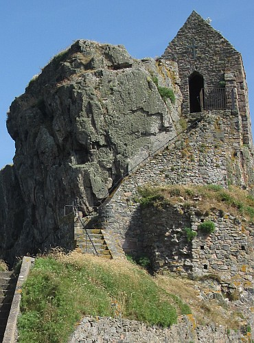

Lé Pèlerinnage dé St. Hélyi 2003
Dînmanche lé 13 d'Juilet
|

L'Hèrmitage dé St. Hélyi
|
Châque année, la meunicipalité et l's églyises Chrêtchiennes dé Jèrri arrangent un pèlerinnage - dé couôteunme chenna a prend pliaiche lé Dînmanche lé pus près du jour d'Saint Hélyi même, tch'est l'seize dé Juilet.
S'lon la tradition, St. Hélyi fut machacré pouor sa fouai d'vant l'rotchi où'est qu'il avait vêtchu pouor treize ans, priant et prêchant la Pathole dé Dgieu ès habitants d'Jèrri.
Ch'n'est qu'au bas dg'ieau qu'nou peut marchi à l'Hèrmitage, la chapelle bâtie sus la pliaiche où'est qu'lé saint d'meuthait y'a des siècl'yes. I' faut pâsser par lé Châté Lîzabé tchi fut bâti sus les rotchièrs d'à côté d'vièrs la fîn du seizième siècl'ye.
En 2003, lé pèlerinnage quémenchit à l'Églyise Pârouaîssiale dé St. Hélyi où'est qu'les pèlerîns chantîtent un cantique.
La procêssion pâssit par les grandes rues d'la Ville, et nou fit eune pause à la Crouaix du Millénaithe pouor des priéthes avant dé d'valler sus la grève pouor c'menchi la crouaîs'sie au Châté. Mouon Doue d'la vie, faîsait-i' eune arsion ch't' année - dans les trente-tch'iun d'grés!
En arrivant au Châté, y'eut un sèrvice dans l'bel ès pathades - des priéthes, des cantiques, et tchique patholes en Jèrriais et eune priéthe en Français env'yée par les pârouaîssiens d'l'églyise dé St. Hélyi à Beuzeville dans la Grand'Tèrre. Lé Péthe Marett-Crosby adréchit tchiques patholes ès pèlerîns entouor Sant Hélyi, l'êtrangi, et coumme les cheins tchi veinnent en Jèrri pouor travailli apportent des dons tout coumme Saint Hélyi tch'apportit la fouai Chrêtchienne.
Les pèlerîns continnuîtent à l'Hèrmitage. Lé Douoyen et l'Connêtabl'ye montîtent les preunmièrs, et l'Connêtabl'ye pliaichit eune couronne dé flieurs sus l'Liet d'St. Hélyi.
Les d'grés sont hardi d'à pic, et l'Hèrmitage est divèrsement p'tit quand y'a du monde là-d'dans, mais pouor dé mé, n'y'a pon d'couôteunme en Jèrri coumme lé Pèlerinnage dé St. Hélyi.
Viyiz étout: